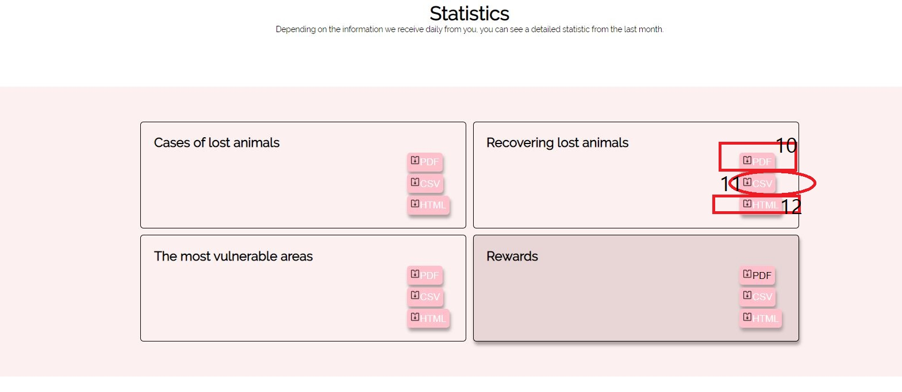

Lost Pets Web Project
Cuprins:
1) Inregistrare si autentificare
Serviciul Lost Pets îți permite să-ți găsești animalul pierdut 24h/24 oriunde in lume,accesând pagina de Home.- Pentru a deveni utilizator al aplicatiei Lost Pets trebuie:
- sa detii un cont la Lost Pets pe care il poti face foarte simplu, inregistrandu-te pe pagina de Inregistrare
- Pentru inregistrare in aplicatia Lost Pets se vor parcurge urmatorii pasi:
- Acceseaza aplicatia Lost Pets in meniul Home, pagina de Inregisrare
- Completeaza Numele si Prenumele,mailul pe care il detii si o parola de minim 6 caractere.Varsta si sexul nu sunt obligatorii.
- Bifeaza termenii si conditiile daca este de acord cu ele.
- Apasa buton Register pentru inregistrarea datelor.
- Pentru autentificare in aplicatia Lost Pets se vor parcurge urmatorii pasi:
- Acceseaza aplicatia Lost Pets in meniul Login
- Introdu mail si parola utilizator.
- Apasa buton Login.Daca mailul si parola nu sunt corecte,veti fi redirectionat spre aceeasi pagina pentru a rescrie credentialele.
- Serviciul Lost Pets este la dispozitia ta.
2) Niveluri de utilizare ale aplicatiei Lost Pets
Pentru a vedea anunturi,a adauga anunturi,a primi notificari sau a vedea statisticile este nevoie de un cont de utilizator pe care il poti crea foarte usor urmand pasii de la Inregistrare
3) Servicii cont
-
Lost Pets este cea mai utila aplicatie web atunci cand ti-ai pierdut animalul preferat. Poti folosi Lost Pets pentru:
- a adauga un anunt
- a edita anuntul tau
- a verifica anunturile deja publicate
- a verifica anunturile publicate de tine
- a edita anuntul altor persoane
- a verifica statisticile create lunar
- a sterge un anunt
- primesti notificari anunt
- a cauta un anunt dupa numele animalului sau idul sau
- a te dezautentifica



Pagina cu statistici4) Adaugarea unui anunt
Pentru a adauga un anunt trebuie accesat New ad din dropdownul care contine numele userului logat ( 6- vezi imaginea). Dupa deschiderea noii pagini, trebuie completate datele utile ale animalului,cat si ale detinatorului pentru ca acesta sa fie mai usor de gasit in cazul modificarii datelor. Este necesara completarea tuturor campurilor obligatorii,prevazute cu * ,a locatiei (trebuie mutat pin-ul de pe harta in locatia animalului pierdut) dar si a celor neobligatorii (la alegere) . Atentie: Completati toate spatiile obligatorii! Bifati daca sunteti de acord cu termenii,iar apoi apasati butonul Add missing pet.
4) Editarea unui anunt
Pentru a edita un anunt trebuie acccesat anuntul dorit. In partea de jos a paginii este butonul Edit Ad.(8-vezi imaginea) Daca esti utilizator si vrei sa modifici anuntul pe care l-ai modificat, ai posibilitatea de a modifica intreg anuntul tau. Daca esti utilizator si vrei sa modifici anuntul altei persoane, ai posibilitatea de a modifica doar locatia ultimei vizualizari al animalului.
4)Vizualizarea tuturor anunturilor
Pentru a vizualiza anunturile, vei deschide pagina Announcements (3-vezi imaginea) ,unde vei gasi in ordine descrescatoarea a ultimei intalniri a animalului pierdut.
4)Vizualizarea tuturor anunturilor mele
Pentru a vizualiza anunturile, vei deschide pagina My personal ads ,din dropdownul ce contine numele utilizatorului(4-vezi imaginea). Vei gasi lista tuturor anunturilor postate de tine pe pagina noastra.
4)Vizualizarea tuturor statisticilor
Pentru a vizualiza statisticile , vei folosi dropdownul ce contine numele utilizatorului si vei accesa Statistics (5-vezi imaginea) unde vei gasi statistici despre aria cea mai vulnerabila pierderilor, cat de utila este aplicatia noastra (animale pierdute/animale gasite deja), ce recompense au animalele , ce cazuri de pierderi sunt ale ultimei luni. Statisticile sunt disponibile in format csv,html si pdf. (10,11,12-vezi imaginea)
4)Stergerea unui anunt
Daca doresti sa stergi anuntul adaugat de tine, trebuie doar sa intri in anuntul tau ,iar in partea de jos folosind butonul Delete my ad vei sterge anuntul. (9-vezi imaginea)
4)Notificari
Daca utilizezi aplicatia noastra si in acest timp cineva a adaugat un anunt in apropierea ta, vei fi notificat! Daca ai adaugat un anunt si esti nerabdator sa afli daca cineva l-a vazut, doar asteapta si vei fi notificat de noi. Pentru a verifica notificarile primite trebuie sa tii deasupra clopotelului din header (2-vezi imaginea).
4)Search
Pentru a cauta animalul dorit ,daca stii numele sau id-ul de identificare poti scrie numele in campul Search (1-vezi imaginea) si il vei gasi mult mai usor.
4)Log out
Daca doresti sa te autentifi cu alt cont, poti folosi butonul log out pentru a iesi din contul tau. (7-vezi imaginea)